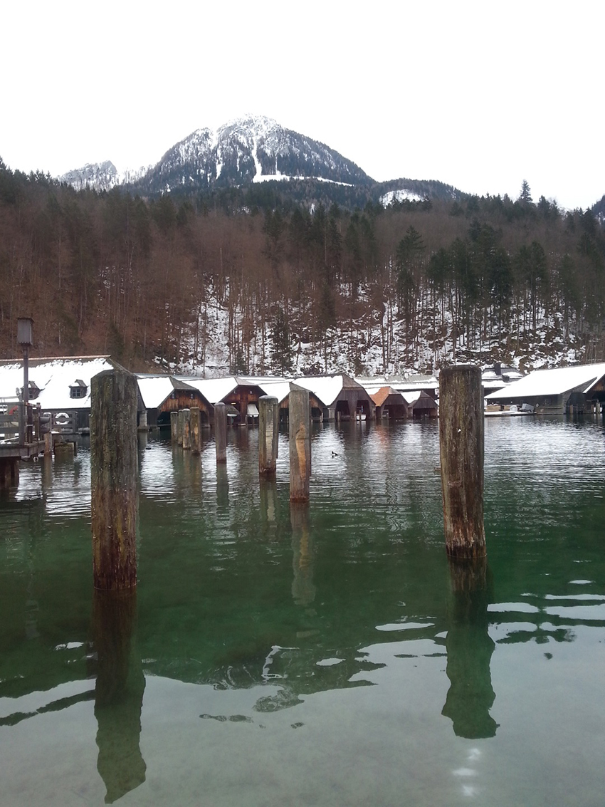
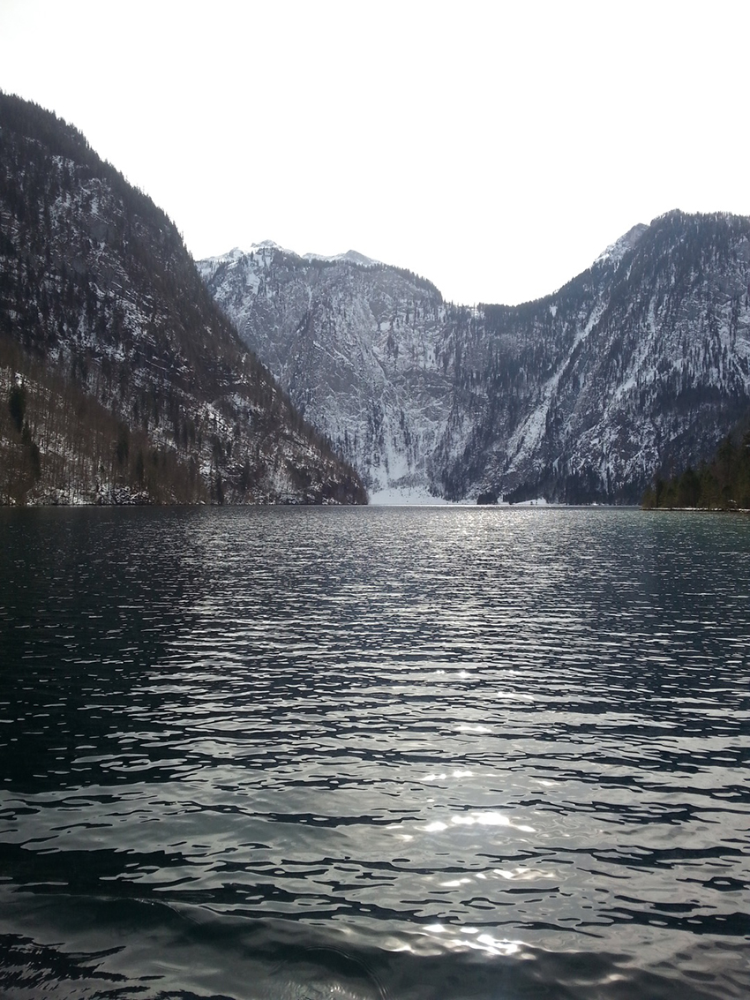
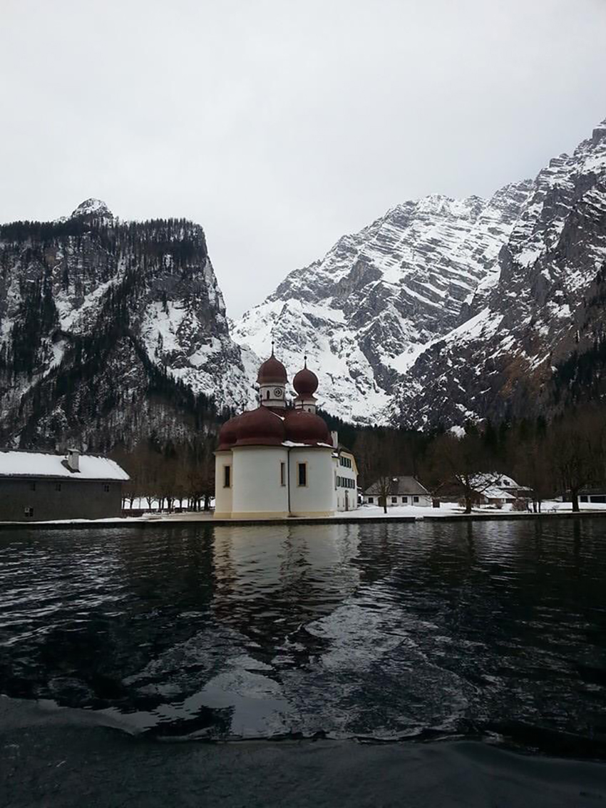
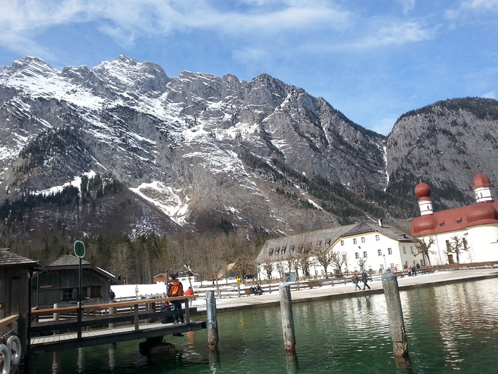
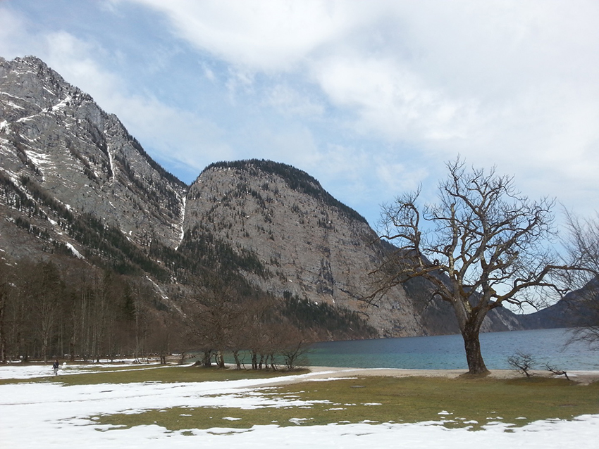
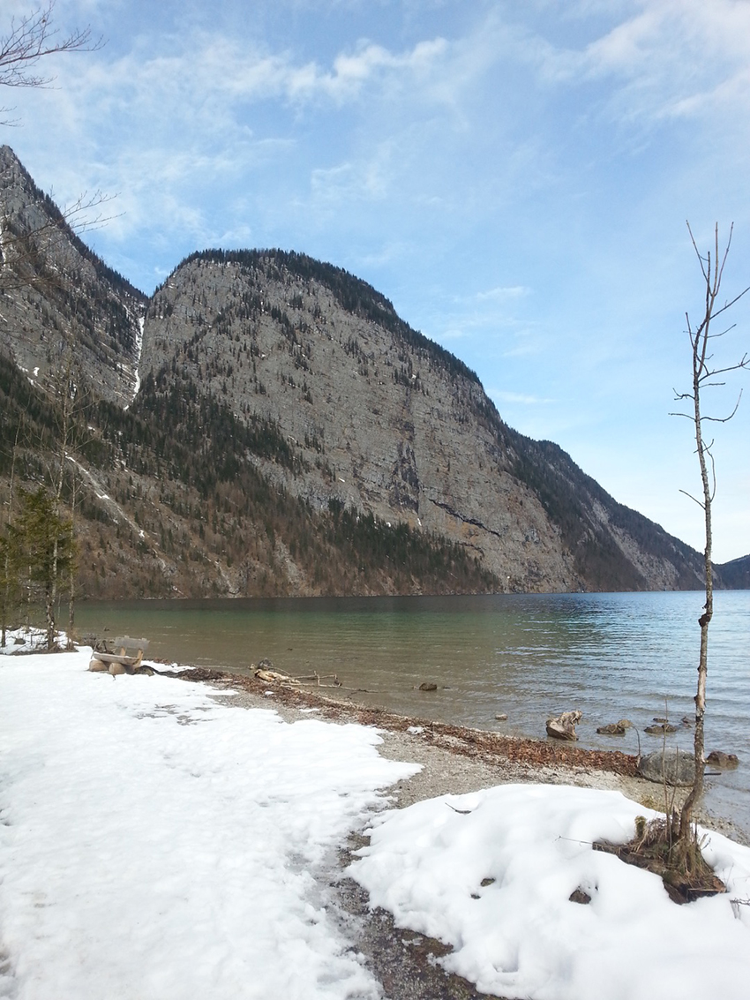
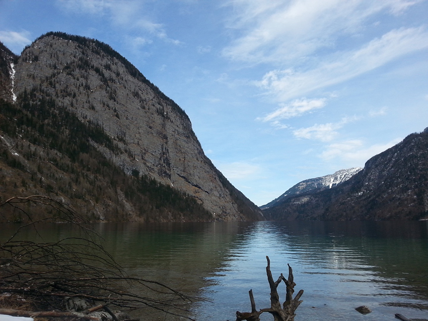

那時候我在德國實習。
因為德國麻疹突發於學生中，於是我們幾個外來人口，被要求到醫院接種德國麻疹疫苗，並且被醫院要求「居家休息」。
10天的自我觀察期，對我們幾個剛到歐洲的女孩子們誘惑力實在太大，幾個人連第一個月薪資都還沒拿到，就拿著身上帶著的，為數不多的歐元，開始蠢蠢欲動。
我們決定去慕尼黑，因為我們想去看迪士尼Logo上那座城堡！據說城堡是以慕尼黑的新天鵝堡為雛形所設計出來的。
快速的討論了行程，訂火車，買區間車票，做景點功課，查詢票價，預定青年旅館。拎上行李，踏上征途。
雪！搭著DB，一路轉車，我們來到了德國南部阿爾卑斯山脈的貝希特斯加登國家公園區。國家公園包含了國王湖三湖，國王湖(Königssee)、辛特湖(Hintersee)和內湖(Obersee)。經過一晚上的修整，我們恢復了前一天在辛特湖和魔法森林「冰雪健行」的疲憊後，起了個大早，我們來到火車站前的巴士站，準備搭車去國王湖，開始我們的重頭大戲──國王湖（Königssee）遊湖健行。
下了大巴之後，冰雪覆蓋了成排木屋的屋頂，成排的薑餅屋乖巧的陣列在我們面前；由於來的早，景區也並不喧囂，配上早晨還不太晴朗的天空，整個國王湖反而且的有些嚴肅。
在小木屋買到了船票之後，由於距離出發時間還有好一陣子，我兩慢悠悠的延著湖邊散步，鼻腔呼吸著清冷的氣息，乾乾淨淨的，沒有雜質，呼出來的白霧像朵小雲，在空氣裡飄盪；這個「湖」真大，群山環繞著國王湖，但他卻大的讓我看不見盡頭……走到了小木屋附近，屋外一排木樁，我猜，應該是拿來綁小船用的吧？不知道等等會不會有武林高手，凌波微步，踏水翩然掠過？
|  | ||
| 凌波微步 |
走進了登船碼頭，我倆在群山之中，等著排隊上船；依著過往的經驗，搭船容易有油耗味，而油耗味容易使我頭暈反胃，希望等等不會搭到暈船。
沿著木棧道走，跟著前方排隊的旅客有秩序地上船，讓我非常意外的是，原來我們搭的是電瓶船，根本不是使用汽油的船隻，完全沒有異味。聽了船上嚮導說明之後，才明白，基於環保考量，同時為了不破壞國王湖純淨的水質，國王湖從1909年開始，就只有手划船、腳踏船以及電動船可以在湖中航行。
原來國王湖是德國最深、最清澈的湖泊！形成在最後一個冰河時期由冰河侵蝕形成，所以我們可以在岩壁上確實的看到冰河的摩擦紋理。而「國王湖」之所以叫做「國王湖」，據說是因為從前有個國王和他殘暴的家族、百姓生活的痛苦不堪，最終他們終於觸怒上帝，上帝一怒之下將國王、皇后，變成了大山和峭壁，並將他們七個子女，變成小山頭，環繞著湖泊，保護一方百姓，並且要接受遊人們萬世的戳戳點點，作為懲罰，因而得名；但我自己是沒感覺出哪裡看起來是國王一家人（德國人想像力難得豐富了一次？）；反倒覺得，國王湖因為他的磅礡、冷冽、大氣，而擔得起以「國王」二字為名。
「叭~~」出發了，挑了一個靠側邊窗戶的位置坐下，可能因為是電瓶船，航行過程並沒有甚麼噪音，兩岸山壁高聳，配上德國冬天，天空未開的闇靄之息，湖泊越映，越成了從沒想過的深沉；原來湖泊並不永遠都是輕靈的，他也能如此沉穩，大氣。逆光前行，那一刻，我彷彿成為了領主，帶領騎士們，逆流而上，開闢疆土。
|  | ||
| 闇靄 |
突然，右側旅客們一陣騷動，我正納悶呢，便也從我這側的窗戶，看見了他們騷動的源頭──一隻老鷹。
老鷹並沒有盤桓在峽谷上空，也沒有俯身下沖撲向他的獵物，他只是，淡然的，悠閒的，路過了峽谷；就像所有來國王湖健行的人們，這麼的舒服、自然而然。
經過了一處峭壁的時候，水手吹起了小號，我已經忘了當時水手吹的是哪個曲子，不過，很清楚的記得，曲子在山谷中，慢悠悠地又飄盪回來，樂曲的層疊之感，就靠著大自然的回音而呈現。據說，以前船長開船到這處絕壁時，鳴槍，能有七次的回音！
船，停靠在湖心島上，白雪幾乎塵封了整個島，放眼一望，唯一鮮亮的顏色，是聖巴托洛梅修道院(St. Bartholomäl)的紅色蔥頭屋頂。甫一踏上碼頭，木質棧道，連接著小島，完全就是世紀帝國的遊戲畫面，彷彿下一秒，會有傳教士帶著他的經典，從修道院中走出來，揮舞著，招降我們這些入侵者。
|  | ||
| 紅頂教堂 |
突然，天空終於不再霧靄，蔽日的雲四散而開，深沉的湖水搖身一變，成了活潑亮麗的翠綠；鐵鏽色的教堂紅頂，成了莊重的磚紅色；大自然果然鬼斧神工，先是冰川侵蝕，開鑿出了這麼大的冰蝕湖；再來是，光靠陽光變化，湖水能轉瞬間呈現出截然不同的風格！如若不是冰雪仍存，估計沒人相信這是同一個季節。
|  | ||
| 破靄 |
依然是一件單薄的牛仔褲，搭配著棉外套，頂著湖風颼颼，悠悠然的沿著教堂散步了一小圈，周圍建築物並不多，這塊土地比較像個中繼站；據說能從我們搭船的地點，徒步過來，不過天氣好的話，光徒步到島上就大概需要5~6小時，遑論這大冬天的多麼凍人。徒步到湖邊，臨湖的一塊地沒有雪，水氣濕潤了土地的同時，也和土地相互溫暖對方。我走到湖邊的木椅陪邊，沒有坐下，就是靜靜地凝視著椅子的背影和湖影連天的景色。說思考人生嘛…太多餘，因為那個當下，人都是空的，彷彿被按下一件重啟，在大自然的震懾之下，入侵者只需要臣服，再無他想。
|  | ||
| 湖景 | ||
|  | ||
| 湖景二 |
漂流木擱淺在岸邊，我緩步向前，湖水依然舒啦舒啦地拍打。 還記得當時的我，拿出了當年的Samsung手機，開啟了錄影功能，為的就是把那年那月那日那時那分那湖水舒心的拍打聲音，那群山環湖的壯麗，切實的，留在我的記憶中。
側坐在漂流木旁，20歲的入侵者煩惱並不太多，能更單純的感受大自然的洗禮；而我想，如果再當一回入侵者，我定是不肯的，因為，我早已臣服，臣服在湖光山色的回音中，與自然一同沉醉而浮。
|  | ||
| 湖景三 |